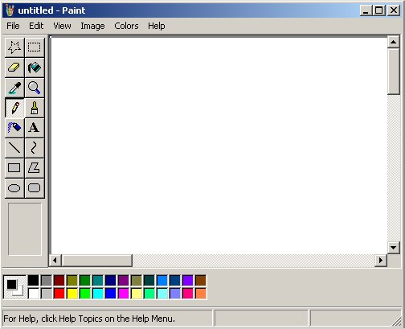

Producerea şi utilizarea curentului continuu |
Curentul electric |
Care dintre corpurile reprezentate în figura 1 este neutru şi care nu?
Figura 1. Corpuri având reprezentate simbolic
sarcinile electrice.
Reprezintă simbolic, pentru fiecare corp, sarcina sa netă.
În experimentele cu benzi adezive pe care le−ai efectuat, interacţiunile electrice deveneau evidente doar atunci când benzile electrizate erau aduse aproape una de cealaltă.
Care este concluzia pe care o poţi obţine în legătură cu forţele de interacţiune electrică: cresc sau scad odată cu creşterea distanţei?
Cum ai repartiza şase electroni pe două corpuri mici, astfel ca forţa totală de respingere dintre aceste corpuri să fie maximă? Consideră că cele două corpuri se află unul faţă de celălalt la o distanţă mult mai mare decât dimensiunile corpurilor (altfel spus, neglijează dimensiunile corpurilor în raport cu distanţa dintre acestea).
Răspuns: Trei pe unul dintre corpuri şi trei pe celălalt.
Când desfaci şi tai banda adezivă de pe rolă, capătul rămas are tendinţa de a se lipi de rolă.
De ce oare se întâmplă aşa?
Un fir conductor conectează electric cele două sfere conductoare reprezentate în figura 2. Sensul curentului prin fir este cel reprezentat.
Figura 2. Un fir conductor conectează electric două
sfere conductoare şi este parcurs de curent în sensul indicat de săgeată.
Purtătorii de sarcină care se deplasează sunt electronii. Care este sensul de deplasare al acestora?
Răspuns: De la B la A. Sensul deplasării electronilor este invers sensului convenţional al curentului (care corespunde sensului deplasării purtătorilor pozitivi de sarcină).
a) Estimează câţi electroni sunt în apa dintr−un pahar.
b) Exprimă în coulombi sarcina electrică totală a electronilor din apa dintr−un pahar.
c) Chiar şi un exces de sarcină de o milionime de coulomb are efecte electrice evidente.
Ce poţi spune atunci despre proporţia în care se găsesc în apa din pahar purtătorii de sarcină având semne contrare?
Răspuns parţial: a) Aproximativ 6·1025 electroni în 180 mL de apă.
Un bec de lanternă funcţionează normal dacă este străbătut de un curent electric cu intensitatea 200 mA.
Câtă sarcină electrică trece prin filamentul becului într−o oră de funcţionare normală?
Răspuns: 720 C.
Un electron este desprins de pe un corp şi transportat foarte departe de acesta. În acest proces s−a efectuat un lucru mecanic de 1,6·10-19 J.
Cu cât a crescut potenţialul electric al corpului?
Răspuns: Cu un volt.
O baterie având tensiunea la borne 4,5 V poate susţine un curent cu intensitatea 0,50 A, pe durata a trei ore.
a) Cât este energia pe care o poate furniza bateria pe parcursul celor trei ore de funcţionare?
b) Cât este puterea furnizată de baterie?
Răspuns parţial: b) 2,25 W.
Un fulger transportă 30 C pentru o tensiune de 10 MV.
Cât este energia degajată de fulger?
Cât timp ar putea fi alimentat un fier de călcat cu puterea 1 kW, dacă ar utiliza energia eliberată de acest fulger?
Cât este puterea fulgerului, dacă acesta durează o miime de secundă?
Răspuns parţial: a) 3,0·108 J.
a) Foloseşte un multimetru şi măsoară intensitatea curentului care străbate un calculator de buzunar în timpul funcţionării acestuia, precum şi tensiunea la care acesta funcţionează normal.
b) Calculează energia utilizată de calculator într−o oră de funcţionare.
c) Calculează puterea absorbită de calculator în timpul funcţionării normale.
Monezile vechi de 100 lei şi cele de 500 lei sunt confecţionate din metale evident diferite: monezile de 100 lei sunt mai dense (Cum ai putea verifica aceasta?). Înseamnă că sunt alcătuite din alte tipuri de atomi, în care electronii sunt altfel aranjaţi. Vei putea profita de această ultimă diferenţă pentru a separa sarcini!
Decupează din hârtie sugativă, sau chiar hârtie de ziar, un disc cu diametrul egal cu cel al unei monede de 100 lei. Înmoaie discul de hârtie într−o soluţie de sare de bucătărie în apă.
Aşază discul de hârtie între o monedă de 100 lei şi una de 500 lei. Măsoară cu un voltmetru tensiunea electrică între cele două monezi. Ai realizat o celulă galvanică care furnizează aproape o jumătate de volt!
Realizează acum o baterie capabilă să alimenteze un calculator de buzunar!
Aplicaţia Microsoft Paint (figura 3), pe care foarte probabil o ai deja instalată (caută cu Start→Programs→Accessories) este un instrument util pentru desenarea schemelor circuitelor electrice. Majoritatea schemelor din această carte electronică au fost realizate cu Paint!

Figura 3. Aplicaţia Microsoft Paint.
Desenează într−un fişier gif (cel mai potrivit pentru reprezentări schematice) simbolurile pentru elementele de circuit pe care le−ai întâlnit (figura 4): celulă galvanică, baterie, bec, întrerupător, voltmetru, ampermetru, arc orientat (pentru tensiune), săgeată (pentru curent).
Figura 4. Desenarea simbolurilor.
Folosind funcţiile Edit→Copy şi Edit→Paste poţi multiplica simbolurile în câte exemplare doreşti.
Cu Image→Flip/Rotate poţi roti sau oglindi simbolul, pentru a−l adapta schemei dorite. Vei descoperi că şi alte funcţii sunt utile pentru sarcini speciale.
Dispui astfel de un instrument cu care poţi aborda cu succes desenarea oricărei scheme electrice! Utilizează−l!
Înţelegerea separării şi recombinării sarcinilor electrice ne permite să anticipăm funcţionarea unui circuit chiar înainte de a−l realiza fizic!
Aplicaţia Circuit Maker (produsă de Protel) îţi permite să simulezi realist funcţioarea circuitelor (figura 5).
Figura 5. Aplicaţia Circuit Maker (versiunea pentru elevi şi studenţi).
Multimetrul indică intensitatea curentului prin bec.
Poţi instala versiunea pentru elevi şi studenţi , care este gratuită!
Te poti familiariza cu modul de lucru în Circuit Maker folosind acest manual de utilizare. Capitolul 3 îţi prezintă câteva tutoriale pentru a deprinde rapid modul de lucru în Circuit Maker.
Dispui acum de un instrument puternic pentru simularea circuitelor - vei afla cum funcţionează circuitele imaginate de tine, chiar înainte de a le realiza fizic!